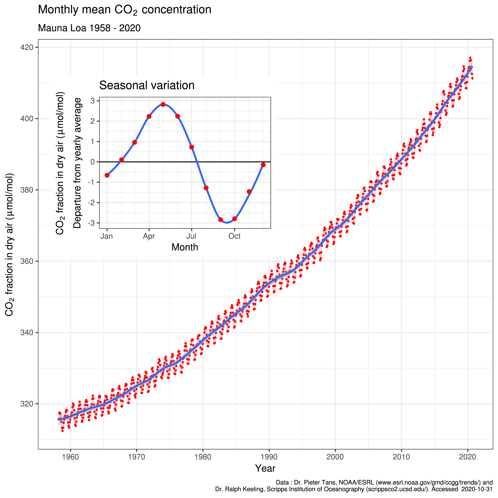
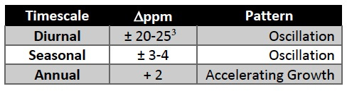
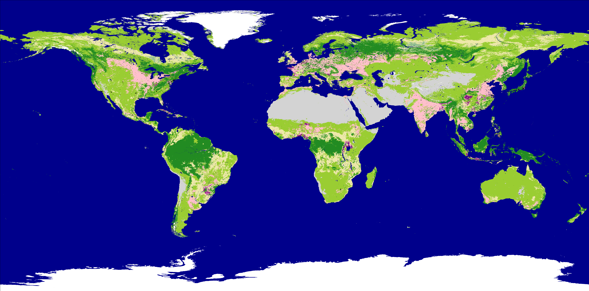
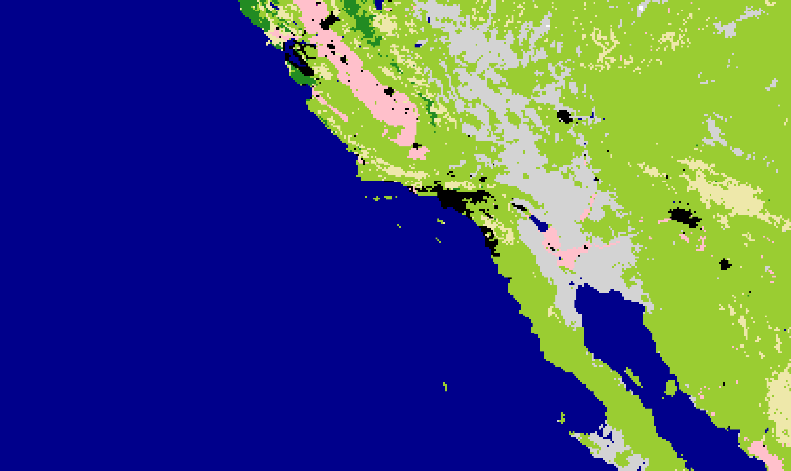

I’m Jonathan Burbaum, and this is Healing Earth with Technology: a weekly, Science-based, subscriber-supported serial. In this serial, I offer a peek behind the headlines of science, focusing (at least in the beginning) on climate change/global warming/decarbonization. I welcome comments, contributions, and discussions, particularly those that follow Deming’s caveat, “In God we trust. All others, bring data.” The subliminal objective is to open the scientific process to a broader audience so that readers can discover their own truth, not based on innuendo or ad hominem attributions but instead based on hard data and critical thought.
You can read Healing for free, and you can reach me directly by replying to this email. If someone forwarded you this email, they’re asking you to sign up. You can do that by clicking here.
If you really want to help spread the word, then pay for the otherwise free subscription. I use any fees to increase readership through Facebook and LinkedIn ads.
Today’s read: 6 minutes.
Something just a bit lighter to start this one
The point of this scene is that land is both taken for granted (by Scarlett) and has inherent and permanent value (as her father scolds her).
The story continues…
Let’s reiterate what the problem is and how solutions might emerge. Stated concisely:
The increase in carbon dioxide levels in the atmosphere, attributable to human extraction and combustion of geologic carbon over 350 years of industrialization, threatens to destabilize Earth’s climates.
To solve this problem, we must somehow control the Earth’s atmosphere. Specifically, we need to adjust the amount of carbon dioxide it contains if we expect to regulate the planet’s temperature. Regardless of how you slice it, adjusting Earth’s “thermostat” will require “geoengineering”, in other words, an intentional process of applying human ingenuity (backed by Science). We also know that decarbonization, at least as far as we’ve taken it, is as (in)effective as a rain dance—Some tribes among us fervently believe that they’re doing something to change the outcome (those “addressing” climate change). But, such efforts fail to connect the effort required to the result desired. Even if decarbonization were wholly successful and implemented tomorrow, we cannot undo past emissions. Decarbonization can only keep the problem from getting worse, and partial decarbonization can only delay the outcome. To successfully turn the thermostat down, we must implement technologies that remove carbon dioxide from the atmosphere.
The simplest and most natural solution is to move water from the oceans to dry land--this increases the total photosynthetic capacity of Earth and will reverse the effect of both current and past combustion if done at scale. The last installment established a rough price ceiling of $1000 per acre-foot along with an approximate cost target of $200-$400 for production, at least under today’s market conditions. But that’s only one part of the puzzle. To make a real difference, we also need to have enough underutilized (marginal) land capable of using this water at scale to capture carbon. Thus, from a visual perspective, we need to “green the desert”—but do we have enough desert, to begin with?
So, in this installment, let’s estimate how much land is needed to capture all the extra carbon released by human activity in a year. In other words, “How much additional farmland would it take to keep the problem from continuing to get worse?” Of course, if the process is seriously limited by land, we’ll need to look for a different solution.
Here’s my stab at an estimate: We already know from observation and consensus that the photosynthetic carrying capacity of Earth reduces the concentration of atmospheric carbon dioxide on an annual basis. Recall this Table and Figure from my tribute to Dave Keeling in installment #5:


From this data, we know two things: from May through September, CO2 drops by 6 ppm, attributed to the fact that there’s more land (where CO2 is captured) in the Northern vs. Southern Hemisphere. How much more (irrigated) land would be required to capture the 2 ppm that humans add? I know it sounds like an SAT question (in the math section), so I apologize to the Humanities majors among my readers, but here’s my back-of-the-envelope analysis. If the current difference in land area causes a 6 unit change, then adding 1/3 of the difference in land area will cause a 2 unit change, on average. This is a thought experiment that helps us see if we’re in the ballpark. Of course, it’s more complicated than that—it’ll make a difference if the land is added at the poles vs. the equator, fertility needs to be factored in, and we can’t add landmass. We will just be adding water to the land we already have. There are plenty of folks with computer models that can answer the question more precisely.
The difference between the landmasses of the hemispheres is about 20% of Earth’s surface, so that would mean covering an additional 7% of the planet with land capable of photosynthesis.1 We’re just answering the question of whether there’s enough land to make it worth pursuing.
In addressing this question, I nerded out in a fairly significant way. I downloaded digital map data from NASA with land classifications and figured out how to analyze it:

From this analysis, about 3% of the Earth’s surface is pure desert, and 2% is human-cultivated cropland, with another 13% as grassland and savanna (what economists refer to as “marginal land” because it is not particularly productive for agriculture). Much of this land is marginal because it needs water. So, without digging too deep into the weeds, it’s clear that there is more than enough arid land to suck up the carbon we emit every year, provided we can irrigate it.
Let’s zoom in to an area that I’m familiar with, the Western part of North America:

Here, we can discern the world that humans inhabit, how we’ve both modified the world we live in, and how much room we have to change it. On this map, we can make out the urban areas of Los Angeles, Las Vegas, and Phoenix (in black) and the agricultural regions of the Central and Salinas Valleys of California (in pink). But, what’s remarkable (to me) is the Imperial Valley, the patch of cultivated cropland to the east of Los Angeles and to the north of the Gulf of California. It’s smack in the middle of the pure desert! This is the direct result of irrigation. In this case, the Colorado River provides the water, but this pattern isn’t unique. You see the same thing in Egypt around the Nile. And, you also begin to see a path forward—with more water, the Imperial Valley could potentially turn a lot more of the desert into agriculture, capturing more carbon dioxide from the atmosphere in the process. And, the Gulf of California is right there!
Does this mean that we should irrigate our way out of our predicament? Well, the main message here is that we can. It’s one proven solution that can scale to the size of the problem we’re looking to solve. There are two takeaways from this installment. First, there’s enough unused land to capture all the carbon dioxide humans emit in a year through photosynthesis. We only need to add irrigation water. Second, a lot of the land is near the ocean, making transportation of the water extremely simple. Look at North Africa, the Arabian peninsula, etc.
The next installment will look at methods for producing fresh water from seawater to see if the approach pencils out from an economic perspective.
Note: In this regard, the melting of the icecaps may partially mitigate the rise in CO2. Let’s let the modelers handle that question, too, shall we?